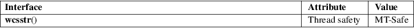

wcsstr − locate a substring in a wide-character string
Standard C library (libc, −lc)
#include <wchar.h>
wchar_t *wcsstr(const wchar_t *haystack, const wchar_t *needle);
The wcsstr() function is the wide-character equivalent of the strstr(3) function. It searches for the first occurrence of the wide-character string needle (without its terminating null wide character (L'\0')) as a substring in the wide-character string haystack.
The wcsstr() function returns a pointer to the first occurrence of needle in haystack. It returns NULL if needle does not occur as a substring in haystack.
Note the special case: If needle is the empty wide-character string, the return value is always haystack itself.
For an explanation of the terms used in this section, see attributes(7).

C11, POSIX.1-2008.
POSIX.1-2001, C99.
strstr(3), wcschr(3)